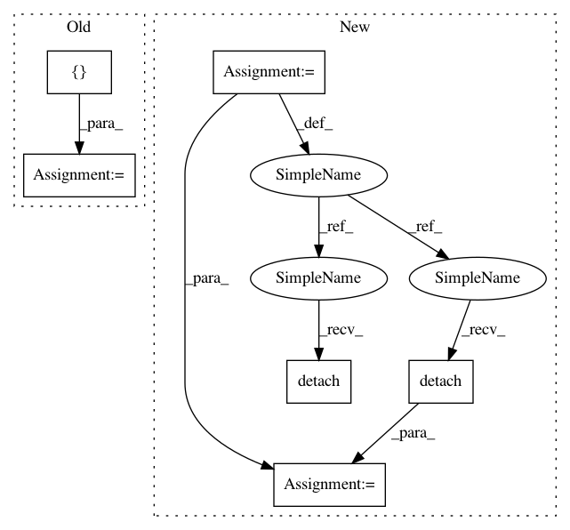

a5eb8d66cf4d433cb5fd0a2cb5cd229077ea54f4,test/lazy/test_cached_cg_lazy_tensor.py,TestCachedCGLazyTensor,create_lazy_tensor,#TestCachedCGLazyTensor#,14
Before Change
mat = mat.matmul(mat.transpose(-1, -2))
mat.requires_grad_(True)
eager_rhss = [torch.randn(5, 10), torch.randn(5, 1)]
return CachedCGLazyTensor(NonLazyTensor(mat), eager_rhss)
def evaluate_lazy_tensor(self, lazy_tensor):
return lazy_tensor.base_lazy_tensor.tensor
After Change
mat.requires_grad_(True)
lazy_tensor = NonLazyTensor(mat)
eager_rhs = torch.randn(5, 10).detach()
with gpytorch.settings.num_trace_samples(1000): // For inv_quad_log_det tests
solve, probe_vecs, probe_vec_norms, probe_vec_solves, tmats = CachedCGLazyTensor.precompute_terms(
lazy_tensor, eager_rhs.detach()
)
eager_rhss = [eager_rhs.detach(), eager_rhs[..., -2:-1].detach()]
solves = [solve.detach(), solve[..., -2:-1].detach()]
return CachedCGLazyTensor(
In pattern: SUPERPATTERN
Frequency: 3
Non-data size: 6
Instances
Project Name: cornellius-gp/gpytorch
Commit Name: a5eb8d66cf4d433cb5fd0a2cb5cd229077ea54f4
Time: 2019-01-02
Author: gpleiss@gmail.com
File Name: test/lazy/test_cached_cg_lazy_tensor.py
Class Name: TestCachedCGLazyTensor
Method Name: create_lazy_tensor
Project Name: cornellius-gp/gpytorch
Commit Name: 91b0d220c8e816766fd4565e1d2f5115d3afbefe
Time: 2018-10-12
Author: gpleiss@gmail.com
File Name: test/functions/test_inv_quad_log_det.py
Class Name: TestInvQuadLogDetBatch
Method Name: setUp
Project Name: cornellius-gp/gpytorch
Commit Name: 91b0d220c8e816766fd4565e1d2f5115d3afbefe
Time: 2018-10-12
Author: gpleiss@gmail.com
File Name: test/functions/test_matmul.py
Class Name: TestMatmulBatch
Method Name: setUp
Project Name: cornellius-gp/gpytorch
Commit Name: a5eb8d66cf4d433cb5fd0a2cb5cd229077ea54f4
Time: 2019-01-02
Author: gpleiss@gmail.com
File Name: test/lazy/test_cached_cg_lazy_tensor.py
Class Name: TestCachedCGLazyTensor
Method Name: create_lazy_tensor